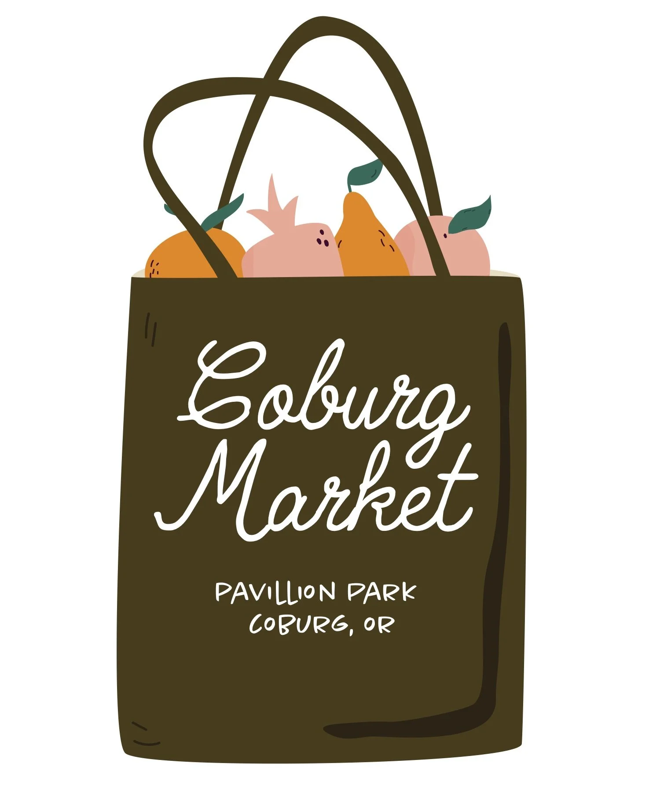

Coburg Market
Discover the Vibrant Coburg Market
When: TBD
Location: Pavilion Park
/coburg-marketImmerse
yourself in the lively atmosphere of the Coburg Market, a cherished local gathering held every week
during the mesmerizing Concerts in the Park. Nestled in the heart of Pavilion Park, this delightful
market is the perfect destination to embrace the warm summer evenings in July and August.
Step into a world of exquisite craftsmanship as you explore an array of hand-made jewelry,
showcasing the skill and creativity of talented artisans. Admire the intricate designs, dazzling
gemstones, and unique pieces that reflect the diversity and beauty of their creators.
Indulge your senses in a sensory journey through the market's stunning collection of leather goods.
From handcrafted bags and belts to stylish wallets and accessories, each item tells a story. Feel
the supple texture of the finest leathers and marvel at the attention to detail that goes into every
creation. As a true family-friendly destination, the market offers an array of activities to keep
everyone entertained. Engage your little ones in interactive workshops, face painting, and engaging
games, ensuring they create cherished memories amidst the joyful ambiance.
Come and experience the Coburg Market at Pavilion Park, where the spirit of community comes alive
against the backdrop of charming melodies. Discover extraordinary treasures, connect with local
artisans, savor the flavors of local cuisine, and bask in the joyous atmosphere that permeates this
beloved market.